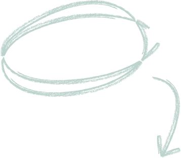
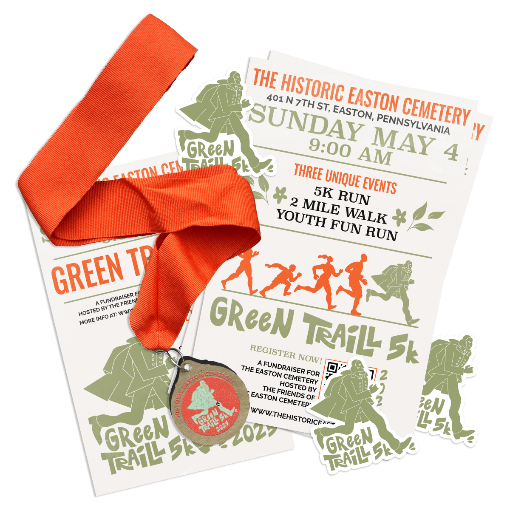
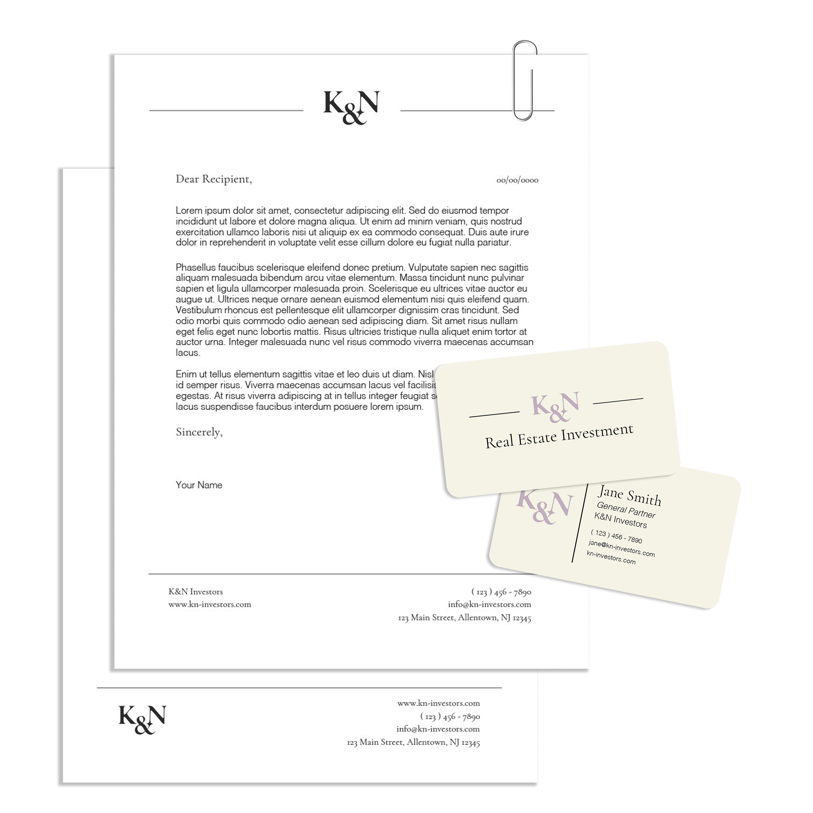
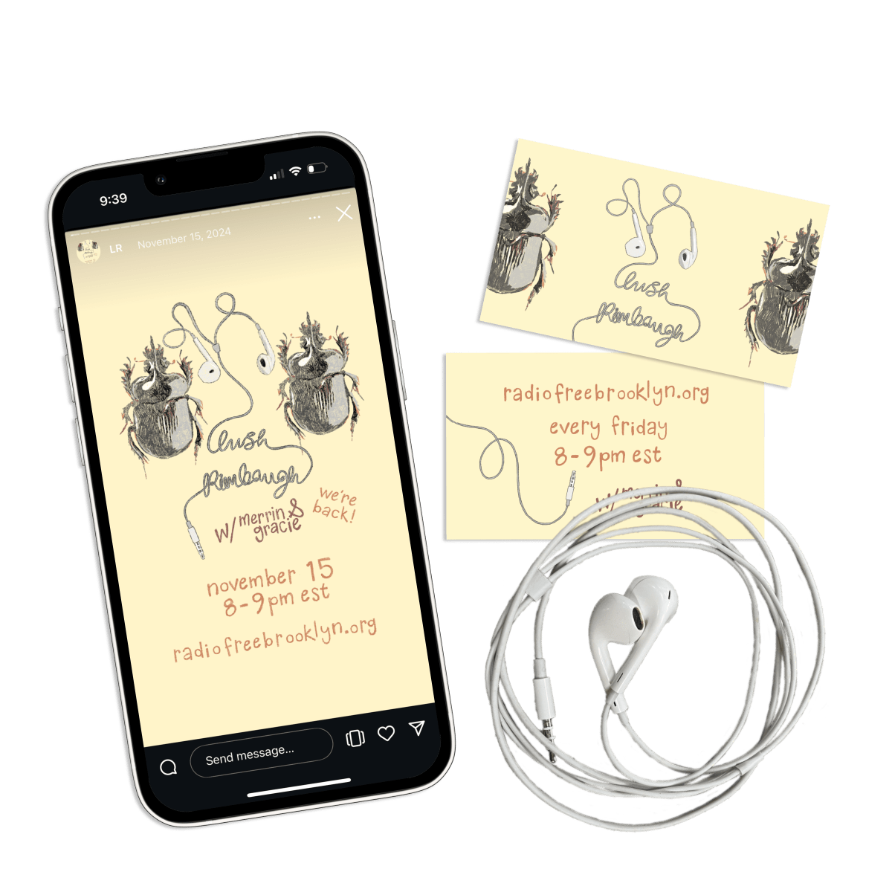
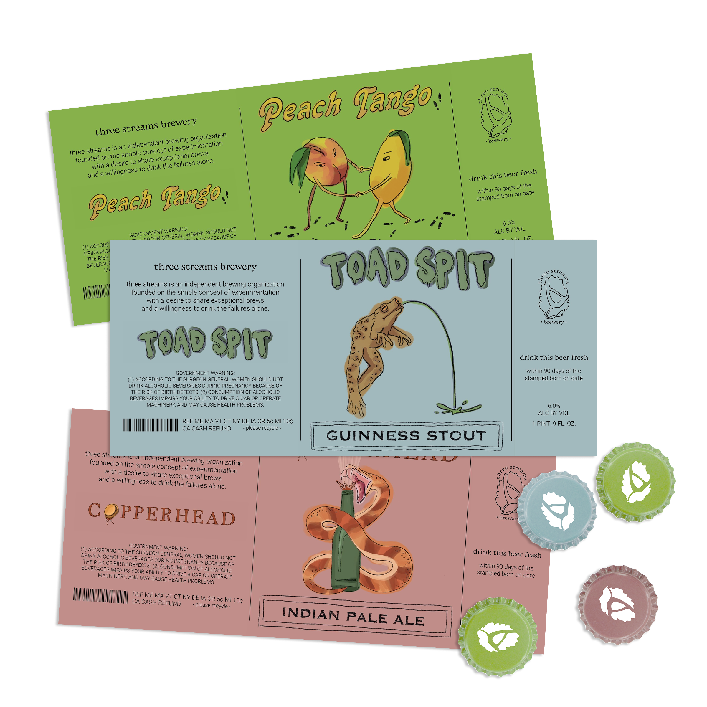
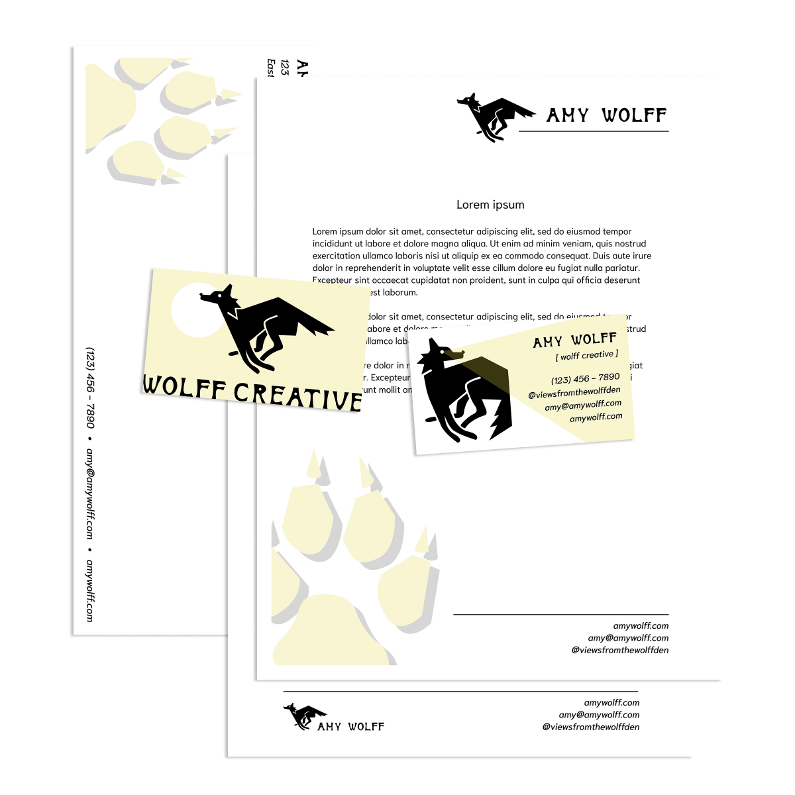
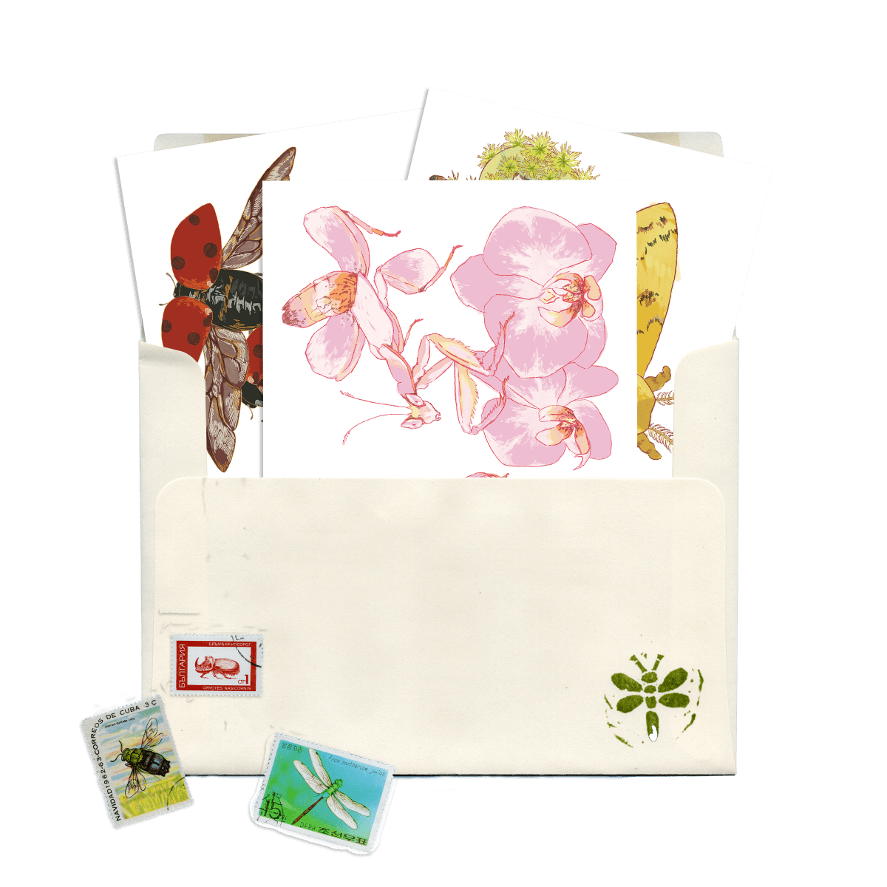

Bailey Foltz
graphic designer + brand designer + illustrator
work


green traill 5k
logo design • visual system guidelines • printed assets • digital assets
For the Green Traill 5k
[ 2024 ]

k&n investors
logo design • visual system guidelines • printed assets • digital assets • web design and development
For K&N Investors
[ 2024 ]

lush rimbaugh
logo design • digital assets • illustration • type design
For Lush Rimbaugh, a radio show
[ 2024 ]

three streams
logo redesign • visual system guidelines • printed assets
For Three Streams Brewery
[ 2024 ]

wolff creative
logo design
For Wolff Creative LLC
[ 2025 ]

print club
illustration
Monthly bug themed prints
[ 2025 ]